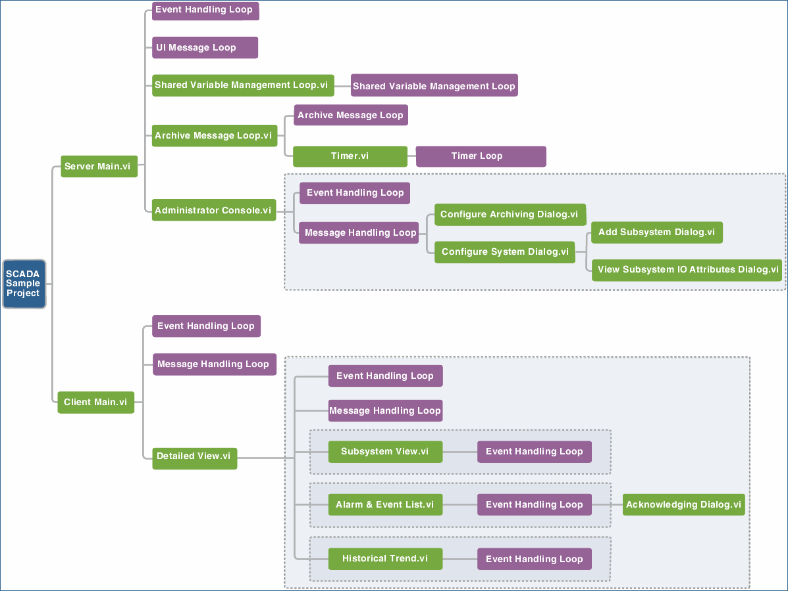

Supervisory Control and Data Acquisition System
The Supervisory Control and Data Acquisition System sample project demonstrates how to implement a supervisory control and data acquisition (SCADA) system with scalable architecture for building systems with a large number of I/O points.
Features
- SCADA server—The SCADA server manages I/O points in the system, logs data and alarms in the historical database, and regularly archives data from the logging database to the archive database.
- Administrator console—The administrator console allows the system administrator to configure and manage the SCADA server.
- Client—The client allows the operators to monitor the system status and I/O points. The operator can view the values of the I/O points, alarms, and historical trends in different detailed views.
- Simulated CompactRIO system and simulated PLC-based system—A simulated CompactRIO system and a simulated PLC-based system are included in this sample project. The systems demonstrate how to connect to third-party devices. You can replace the simulated systems with a real CompactRIO system and a real PLC-based system.
- Scalability—You can use this sample project as a starting point to scale to a large system by adding a large number of I/O points or adding many subsystems in this sample project.
System Requirements
- LabVIEW Base, Full, or Professional Development System (32-bit)
- LabVIEW Datalogging and Supervisory Control Module
Overview
This sample project consists of two main parts: the server and the client. Both the server and the client are based on the Queued Message Handler template.
The server consists of the following components:
- Server Main—Shows the server running log. Server Main is the main user interface of the SCADA server and is responsible for managing shared variables, data logging, and data archiving. Server Main includes the following loops running in parallel:
- Event Handling Loop—Processes user interface events and sends messages to the UI Message Loop.
- UI Message Loop—Handles UI messages from the server and transmits messages for message loops.
- Shared Variable Management Loop—Manages shared variables.
- Archive Management Loop—Handles archiving functionality.
- Timer Loop—Acts as a timer to trigger archiving. This timer loop pauses when archiving is disabled.
- Administrator Console—Sends configuration changes to the server. When the server receives the changes, the server applies the changes. Administrator Console includes the following loops running in parallel:
- Event Handling Loop—Processes user interface events and sends messages to the Message Handling Loop.
- Message Handling Loop—Handles messages for the Administrator Console.
The client consists of the following components:
- Client Main—Displays an overview of the SCADA system and lists valid subsystems. Client Main includes the following loops running in parallel:
- Event Handling Loop—Processes user interface events and sends messages to the Message Handling Loop.
- Message Handling Loop—Handles messages for the client.
- Detailed View—Shows detailed information of a subsystem. Detailed View includes the following loops running in parallel:
- Event Handling Loop—Processes user interface events and sends messages to the Message Handling Loop.
- Message Handling Loop—Handles messages for the Detailed View.
Detailed View also includes the following detailed subviews:
- Subsystem View—Shows a graph of systems and a list of I/O points for a specified subsystem.
- Alarm & Event List—Shows a list of alarms and events for a specified subsystem.
- Historical Trend—Shows the historical trends for a specified subsystem.
The following illustration shows the structure of this sample project and the relationships between the user interface loops and the user interface VIs.
 | Note A VI that is not a subVI of its caller VI is highlighted with a gray dotted line. For example, the Administrator Console VI is not a subVI of the Server Main VI. The Server Main VI uses the Administrator Console VI by starting an asynchronous call. |

Running this Sample Project
- In the Project Explorer window, right-click IO Simulation»OPC Server Configuration.opf and select Open to load the configuration file for the NI OPC Servers.
- In the NI OPC Servers dialog box, click Yes to apply the configuration for the NI OPC Servers at run time.
- In the Project Explorer window, right-click IO Simulation»PLC1.lvlib and select Deploy from the shortcut menu to create a simulated OPC process.
- Open and run IO Simulation»cRIO.lvlib»cRIO IO Simulation.vi to create a simulated CompactRIO process.
- Open and run Server Main.vi to start the SCADA server.
- Open and run Client Main.vi to open the client.
Modifying this Sample Project
Adding Simulated CompactRIO Processes
You can add one or more simulated CompactRIO processes in this sample project. Complete the following steps to add a simulated CompactRIO process.
- In the Project Explorer window, right-click IO Simulation»cRIO1.lvlib and select Save»Save As from the shortcut menu.
- (Optional) Specify a name for the CompactRIO process.
- Click Continue to open the Select a Directory dialog box.
- Specify a directory where you want to save this library and click Save.
- Expand the library that you created, right-click cRIO IO Simulation.vi and select Open.
- (Optional) Replace the cRIO1 string input with the name that you specified for the new simulated process and save the change.
- Open and run cRIO IO Simulation.vi in the new library to create a simulated CompactRIO process.
Adding Simulated PLC-based Processes
You can add one or more simulated PLC-based processes in this sample project. Complete the following steps to add a simulated PLC-based process.
- In the Project Explorer window, right-click IO Simulation»OPC Server Configuration.opf and select Open to load the configuration file for the NI OPC Servers.
- In the NI OPC Servers dialog box, click Yes to apply the configuration for the NI OPC Servers at run time.
- In the NI OPC Servers application, expand Channel, right-click Subsystem IO Template and select Copy from the shortcut menu.
- Right-click Channel and select Paste from the shortcut menu to open the Device Properties dialog box.
- Specify the properties for the new channel and click OK. LabVIEW creates a new subsystem IO template under Channel.
- Select File»Save.
- In the Project Explorer window, right-click IO Simulation»PLC1.lvlib and select Deploy from the shortcut menu.
 | Tip You also can add a simulated PLC-based process by deploying a copy of the existing simulated PLC-based library. |
Adding Subsystems Bound to Simulated Processes Using the Configuration File
You can add subsystems that are bound to a simulated CompactRIO process or a PLC-based process by modifying the configuration file for the server. You do not need to create a simulated process in the variable engine before you create a bound subsystem.
- In the Project Explorer window, right-click Configuration Files»Server.ini and select Open to open the configuration file for the server.
- Add a new subsystem entry in the configuration file. For example, you can add a subsystem named Subsystem3 and specify the URL for this subsystem.
- Save the changes. You must restart the server for changes to take effect.
Adding Subsystems Bound to Simulated Processes Using the Server Dialog Box
You can add subsystems that are bound to a simulated CompactRIO process or a simulated PLC-based process by configuring the Server dialog box. Before you can create a bound subsystem, you must create a simulated process in the variable engine.
- In the Project Explorer window, open and run My Computer»Server Main.vi to display the Server dialog box.
- Click the Administrator Console button in the Server dialog box to open the Administrator Console dialog box.
- Click the Configure System button to open the Configure System Dialog dialog box.
- Click the add button next to the Subsystems field to open the Add Subsystem Dialog dialog box.
- Specify a name and binding simulated process URL for the subsystem.
- Click the OK button to apply the changes and close the dialog box.
Additional Resources
Refer to the LabVIEW Help, available by selecting Help»LabVIEW Help from LabVIEW, for information about LabVIEW concepts or objects used in this sample project. You also can use the Context Help window to learn basic information about LabVIEW objects as you move the cursor over each object. To display the Context Help window in LabVIEW, select Help»Show Context Help.
This sample project is based on the Queued Message Handler template and uses LabVIEW Datalogging and Supervisory Control Module features, such as HMI design, third-party connectivity, historical data logging, and alarm logging. Refer to the Queued Message Handler template and its documentation, available from the Create Project dialog box, for information about how the Queued Message Handler template works.
Refer to ni.com for a developer walkthrough of this sample project.
Important Information
Copyright
© 2014 National Instruments. All rights reserved.
Under the copyright laws, this publication may not be reproduced or transmitted in any form, electronic or mechanical, including photocopying, recording, storing in an information retrieval system, or translating, in whole or in part, without the prior written consent of National Instruments Corporation.
National Instruments respects the intellectual property of others, and we ask our users to do the same. NI software is protected by copyright and other intellectual property laws. Where NI software may be used to reproduce software or other materials belonging to others, you may use NI software only to reproduce materials that you may reproduce in accordance with the terms of any applicable license or other legal restriction.
End-User License Agreements and Third-Party Legal Notices
You can find end-user license agreements (EULAs) and third-party legal notices in the following locations after installation:
- Notices are located in the <National Instruments>\_Legal Information and <National Instruments> directories.
- EULAs are located in the <National Instruments>\Shared\MDF\Legal\license directory.
- Review <National Instruments>\_Legal Information.txt for information on including legal information in installers built with NI products.
Trademarks
Refer to the NI Trademarks and Logo Guidelines at ni.com/trademarks for information on National Instruments trademarks. Other product and company names mentioned herein are trademarks or trade names of their respective companies.
Patents
For patents covering the National Instruments products/technology, refer to the appropriate location: Help»Patents in your software, the patents.txt file on your media, or the National Instruments Patent Notice at ni.com/patents.